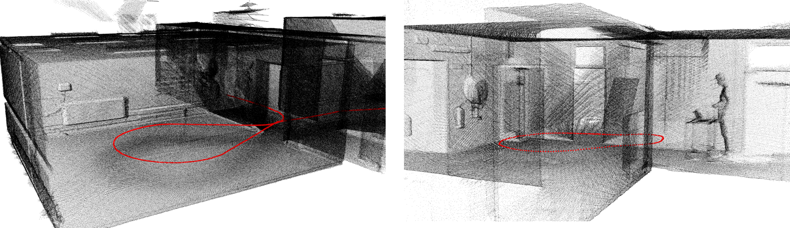
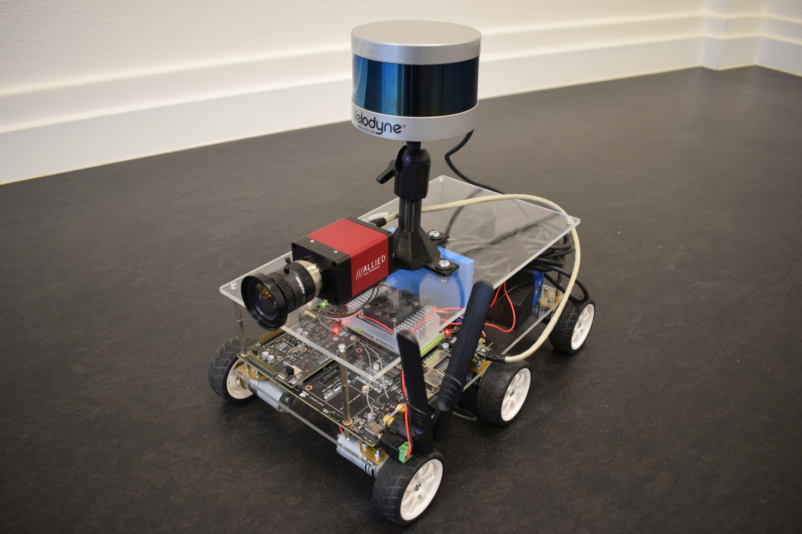

3D mapping using active depth sensors
During my PhD I developed a system that is able to perform 3D mapping - and thus also 3D positioning - based on sensors that are able to perceive the environment, such as cameras or depth sensors. In the scientific literature, this problem is also known as simultaneous localization and mapping or SLAM as it involves both the precise localization of the robot and the mapping of the environment at the same time.

Current 3D mapping solutions are either too slow or they are insufficiently accurate or robust. Moreover, they are often still relying on external positioning, which makes them unsuitable in a lot of circumstances. In this work, we invented techniques that allow to build a 3D map of the environment in real-time and solely using data captured with active depth sensors.
The research contributions of this work focus on three major improvements in the domain of 3D mapping and localization. First, we developed techniques to accelerate the mapping process making it possible to reconstruct the environment in high detail in real-time. This means that the data is aggregated into a 3D map at the rate it comes in, such that it can be used by autonomous robots to navigate themselves within the environment. It also allows AR applications to use the 3D map to enrich the field of view of the user with virtual objects. Thanks to the high level of detail of the reconstructions the system can also be used for real-time inspection purposes or real-time damage assessment.
Second, we focused on algorithms that improve the accuracy of mobile 3D mapping to a level above what is available in the academic literature. In addition, we developed techniques to dynamically adjust the level of detail, making it possible to tune the speed versus accuracy trade-off depending on the use case or the `circumstances’, e.g. in case of resource-constrained operating platforms.
Third, we focused on the robustness of the 3D SLAM process in order to avoid situations in which the tracking is lost due to failures in one of the different sub-processes. Below we explain the main research contributions of this work.
Liborg
Besides the development of efficient 3D mapping algorithms, we also needed an efficient acquisition platform to easily collect data from. To that end, we started with the development of a rover that can map its environment. In a later stage, we also made it possible to perform live 3D mapping of the scene on the embedded computer of the robot, i.e. the NVIDIA Jetson TX2.

In addition, we developed a system to transmit the reconstructed 3D model to a remote computer or server. The latter allows a number of additional applications for which the robot can be used such as live monitoring of the acquired 3D model, for instance to perform inspection or assess damages in areas that are difficult to reach. We made it possible to control the robot using a remote control and thus to define the area to be mapped.
Recently, we started the development of a truly autonomous system in a way that it will be possible for the robot to perform navigation based on its own acquired 3D model. This will allow the robot to perform the entire 3D mapping of a scene without any manual intervention.
The main sensor on the rover is a lidar scanner, hence the name Liborg. At a later stage we integrated a regular camera on the robot to be able to combine the 3D geometric information of the scene with visual data. To that end, a synchronisation module was developed along with calibration algorithms to relate the data of both sensors.
The work on Liborg has been published and presented at an international scientific conference. The rover was also demonstrated at the international technology forum (ITF) of imec in 2017 and 2018 as well as during the anniversary exhibition of Ghent University in 2017. The development of Liborg was also highlighted in the Imec magazine of October 2018 [link].